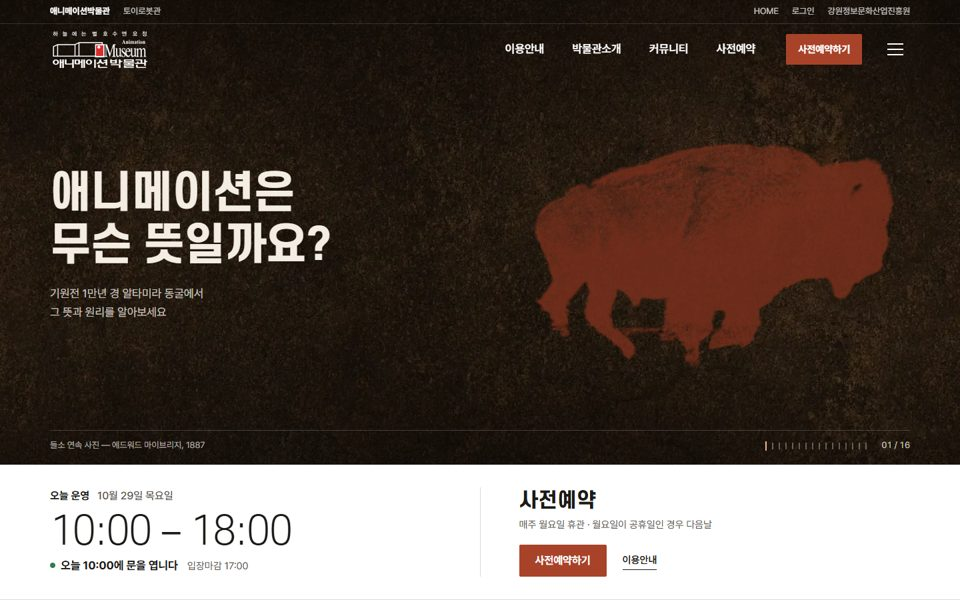
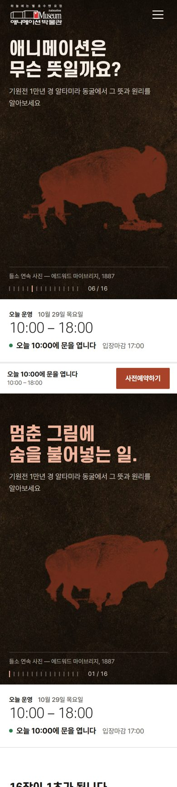

  1안 동굴벽화가 달린다 1층 동굴벽화의 질문 '애니메이션은 무슨 뜻일까요?'에 첫 화면이 답합니다. 마이브리지의 1887년 들소 연속 사진 16장이 바위 벽 위에서 스크롤하는 만큼 달립니다. 시안 열기
2안 1908, 첫 번째 만화영화 첫 화면이 상영관이 되고, 손그림만으로 만든 최초의 애니메이션 '판타스마고리'(에밀 콜, 1908) 원본 필름이 돌아갑니다. 스크롤하면 무성영화 자막 카드가 관람 동선을 잇습니다. 시안 열기